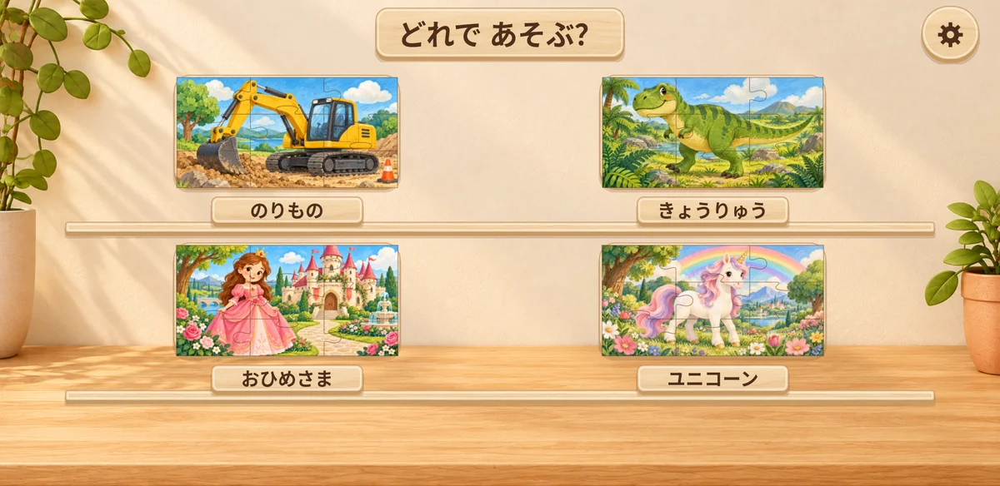

木のおもちゃパズル
幼児向け
好きな絵を、ひとつずつ。
木のぬくもりを感じる見た目で楽しむ、横向きの絵のパズル。

4つのジャンル、全24枚
のりもの、きょうりゅう、おひめさま、ユニコーン。それぞれ6枚の絵を用意しています。すべての絵を9・16・25ピースで遊べます。
ひとつずつ、できた。
- 回転操作や時間制限なし。大きな盤面へピースを指で運びます。
- 初めての1ピースは動かし方を案内。迷ったときは置く場所をガイドします。
- 完成すると「できたね！」のメッセージときらめきでお祝いします。
おうちの方が設定できます
ピース数のほか、効果音とBGMをそれぞれON・OFFにしたり、音量を調整したりできます。絵や音はアプリに含まれ、パズルはオフラインでも遊べます。
現在は公開に向けて準備中です。配信情報は、このページでお知らせします。